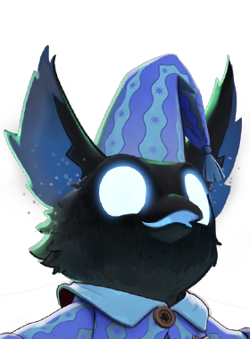
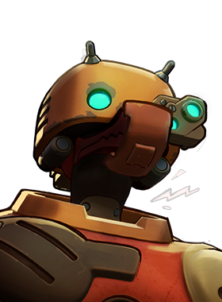
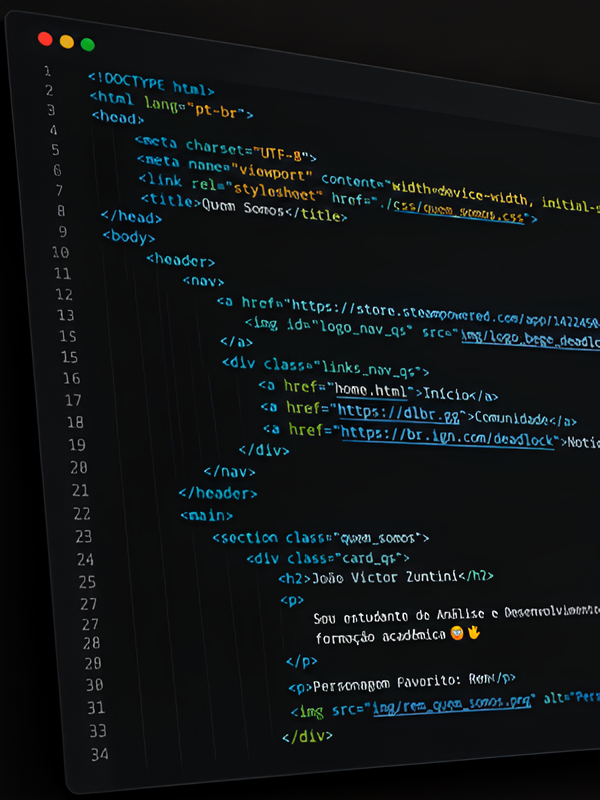

João Victor Zuntini
Sou estudante de Análise e Desenvolvimento de Sistemas e tenho interesse pela área de tecnologia e desenvolvimento. Gosto de aprender coisas novas e de colocar em prática aquilo que estudo, principalmente quando posso criar e desenvolver meus próprios projetos. Tenho buscado evoluir meus conhecimentos em programação e desenvolvimento web e este projeto representa uma oportunidade de aplicar esses conhecimentos de uma forma criativa, unindo tecnologia e um dos jogos que mais gosto 🤓🖖
Personagem Favorito: Rem

Visite meu GitHub
GitHubFabrício Soares
Sou estudante de Análise e Desenvolvimento de Sistemas e venho construindo meus conhecimentos na área de tecnologia. Tenho interesse em programação e desenvolvimento de projetos, buscando sempre aprender e melhorar minhas habilidades. Gosto da ideia de transformar aquilo que aprendemos em sala de aula em projetos práticos e criativos. Participar deste projeto foi uma oportunidade de trabalhar em equipe e colocar em prática os conhecimentos adquiridos durante o curso.
Peronagem favorito: BeBop

Visite meu GitHub
GitHubNosso projeto
O desenvolvimento deste projeto teve como objetivo criar um site inspirado no universo de Deadlock, reunindo informações sobre o jogo de forma organizada e interativa. Durante a criação, trabalhamos na estrutura das páginas, na identidade visual e na responsividade do site, utilizando HTML, CSS e JavaScript. O projeto também nos permitiu colocar em prática os conhecimentos adquiridos durante o curso e desenvolver uma experiência completa para os usuários.

Veja o desenvolvimento